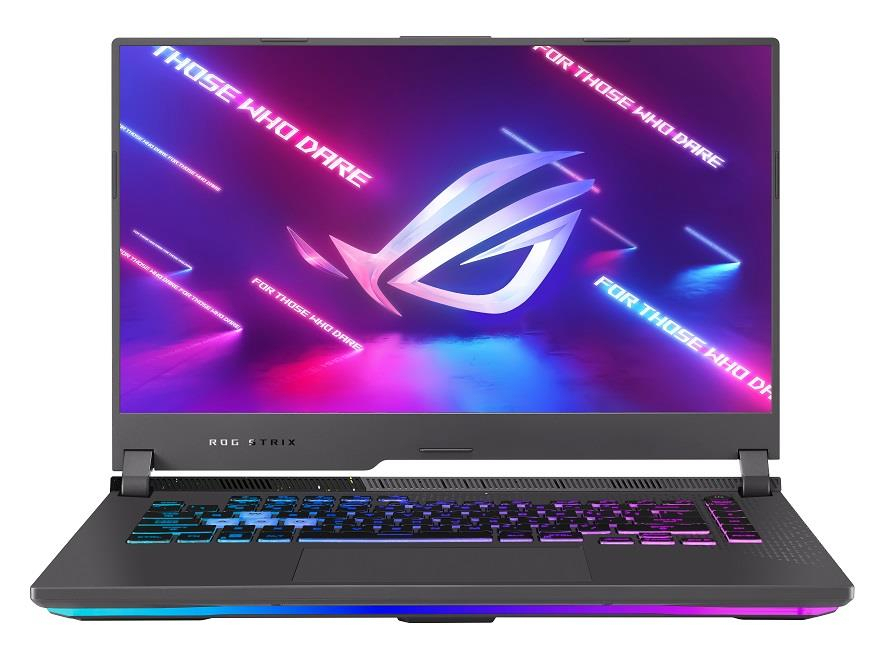
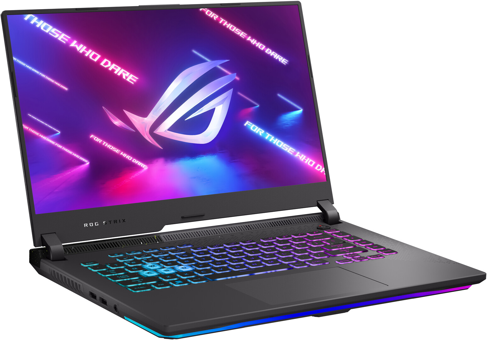

ASUS ROG G513RC-HN088W

Especificaciones:
- Pantalla: 15.6" Full HD, 144Hz, IPS 250 nits
- Procesador: AMD Ryzen 7 6800H (8C/OctaCore 3.2 / 4.7GHz, 16MB)
- Memoria RAM: 16GB SO-DIMM DDR5 4800MHz
- Almacenamiento: 512GB SSD M.2 NVMe PCIe
- Gráficos: NVIDIA GeForce RTX 3050 4GB GDDR6
- Conectividad: LAN 10/100/1000, WiFi 6E, Bluetooth 5.2
- Dimensiones: 35.4 x 25.9 x 2.26 ~ 2.72 cm
- Peso: 2.30 kg
- Sonido: Dos altavoces de 1 W con Smart Amp y Dolby Atmos
- Iluminación: Barra Aura Sync RGB sincronizada con su teclado
- Micrófono: Sí, cancelación de ruido por IA
- Batería: Polímero de ion-litio 4 celdas, 56 Wh
- Conexiones: HDMI 2.0b, RJ45, 2 x USB 3.2 de tipo A, 2 x USB 3.2 de tipo C, 1 x 3.5mm combo audio jack

Comprar ahora